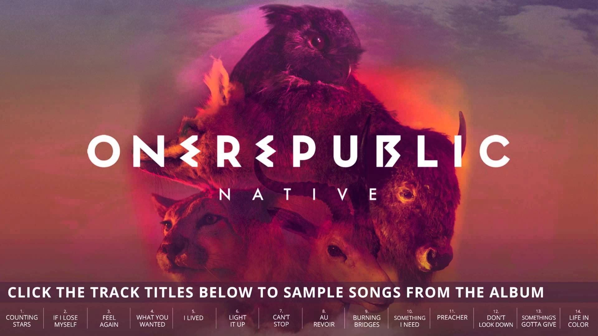

<ion-header class="cabecera" >
  <ion-navbar>
    <button ion-button menuToggle class="btnmenu">
      <ion-icon name="menu"></ion-icon>
    </button>
    <ion-title color="red" >Bienvenido</ion-title>   
      <!--<ion-searchbar (ionInput)="getItems($event)"></ion-searchbar>-->      
  </ion-navbar>
</ion-header>

<ion-content class="contenido" padding>
  <div class="slider">
    <ion-slides>
      <ion-slide>
        
      </ion-slide>
      <ion-slide>
          
      </ion-slide>
      <ion-slide>
          
      </ion-slide>
      <ion-slide>
        
      </ion-slide>
      <ion-slide>
          
      </ion-slide>
      <ion-slide>
          
      </ion-slide>
    </ion-slides>
  </div>
    
  <div class="contentinicio">
      <h2>GENEROS</h2>
      <button class="btnejm" >ROCK</button>  
      <button class="btnejm1" >POP</button>
      <button class="btnejm2" >JAZZ</button>
      <button class="btnejm3" >ELECTRONICA</button>     
    </div>

  <div>
  <!--<button ion-button secondary (click)="pasarSiguienteSlider()">next</button>-->

      <ion-list *ngIf="valor.length>0">
          <ion-item  *ngFor="let item of items">
          {{ item }}
          </ion-item>
      </ion-list>

    <h3>Ionic Menu Starter</h3>
<!--(ionDrag)="borrar($event,cantante)"-->
  <ion-list reorder='true'> 
    <ion-item-sliding *ngFor="let disco of retornarDisco()"  >
      <ion-item> 
        <ion-avatar item-start  (click)="play(disco)">
          
        </ion-avatar>
        <h2 >{{disco.nombre}}</h2>
        <!--(click)="pause()"-->
        <ion-icon *ngIf="!disco.reproduciendo" name="play" (click)="play(disco)" item-right></ion-icon>
        <ion-icon  *ngIf="disco.reproduciendo" name="pause" item-right (click)="pause()"></ion-icon>
      </ion-item>
      <ion-item-options  side="left">
        <button danger ><ion-icon trash></ion-icon> Delete</button>
      </ion-item-options>
    </ion-item-sliding>
  </ion-list>  

  <button ion-button secondary menuToggle>Toggle Menu</button>
  </div>
</ion-content>
